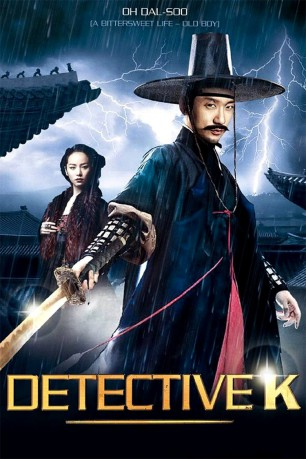

#3942 Detective K - Im Auftrag des Königs
Alternativ: Detective K: Secret of Virtuous Widow (Englischer Titel)
 
 IMDB-Wertung: 6.4 / 10
IMDB-Wertung: 6.4 / 10  Metascore: 0
Metascore: 0 
1782. König Jeong-jo regiert bereits seit sechzehn Jahren, als die Hauptstadt seines Landes Joseon von einer Reihe blutiger Morde heimgesucht wird. Der König vermutet, dass hinter den rätselhaften Taten eine Verschwörung hoher Beamter steckt, um einen üblen Fall von Korruption zu vertuschen. Korruption, die dafür sorgt, dass immer mehr Steuereinahmen fehlen. Jeong-jo beauftragt den berühmt-berüchtigten Detektiv K (Kim Myung-min). Der soll herausfinden, wer die Drahtzieher sind. Doch sogleich wird auch K von den Killern gejagt und muss um sein Leben fürchten. Und nicht nur das. Auch wird der umtriebige Detektiv selbst verdächtigt und landet im Gefängnis.
Jahr: 2011
Dauer: 115 Minuten
FSK: 12
Land: Süd-Korea Studio: New KSMTonspuren:
Untertitel:
Auflösung: 1080p (1920x1040) Größe: 7403 MB
Genre: Action, Komödie, Krimi, Mystery, Geschichte
Regisseur: Kim Suk-Yoon
Drehbuch: Natalie Scharf
Soundtrack:
Darsteller:
- Myung-min Kim als Detective K
 Dal-su Oh als Seo-Pil
Dal-su Oh als Seo-Pil- Ji-min Han als Master Han / Han Gaek-Joo / Lee Ah-Yeong
- Jae-yong Lee als Minister Lim
- Hyeon Woo als Mr. Bang
- Soo-jeong Ye als Lim Jwa-Soo's Wife
- Moo-Seong Choi als Medical guru
 In-gi Jeong als Magistrate
In-gi Jeong als Magistrate- Seol-gu Lee als Slave 4
- Kyeong-min Mun als Old blacksmith
- Hyo-Sang Choi als Dae Je-Hak
- Han-beom Lee als Gong-Bang
- Yeong-gi Jeong als Choon-Hwa House Pimp
- Dong-kyoo Lee als Onlooker
- Ji-won Seo als Mak-Gol-Li Man 2
Datei: X:\HD-Eastern-Classic(A-M)\Detective K - Im Auftrag des Königs (2011, FSK12, 1920x1040).mkv seit 04.07.2016
Festplatte: HD Eastern+Western
 Es gibt insgesamt 63 Filme in der Gruppe 'HD-Eastern-Classic(A-M)'
Es gibt insgesamt 63 Filme in der Gruppe 'HD-Eastern-Classic(A-M)'